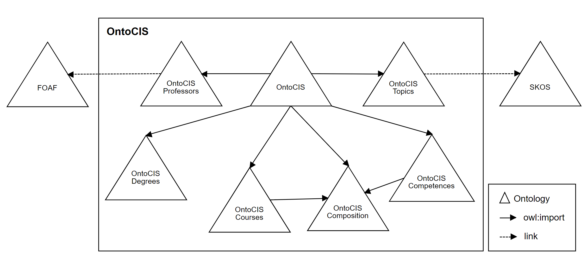

Here you can find all the ontologies that make part of OntoCIS.
| Ontology | Serialization | License | Languages | Description |
|---|---|---|---|---|
| OntoCIS | TTL | MIT | es en | An ontology that describes the curricula of the degree in Software Engineering at Universidad ORT Uruguay. |
| OntoCIS Composition | TTL | MIT | es en | It contains properties that help define simple composition relationships (part-whole). |
| OntoCIS Topics | TTL | MIT | es en | Provides information about topics taught during a degree. |
| OntoCIS Competences | TTL | MIT | es en | Describes a set of competences, general statements detailing the desired knowledge and skills of student graduating from a course or program should acquire, and categories under which organize them. |
| OntoCIS Degrees | TTL | MIT | es en | Provides information about the degrees that can be awarded after completing a curricula at an university or faculty. |
| OntoCIS Professors | TTL | MIT | es en | Provides basic information about the professors of an university or faculty. |
| OntoCIS Courses | TTL | MIT | es en | Describes the different kind of courses, the structure of the knowledge body and of the typical courses distribution. |
This ontology was developed as part of a final project for the degree in Systems Engineering (Ingeniería en Sistemas) at Universidad ORT Uruguay.